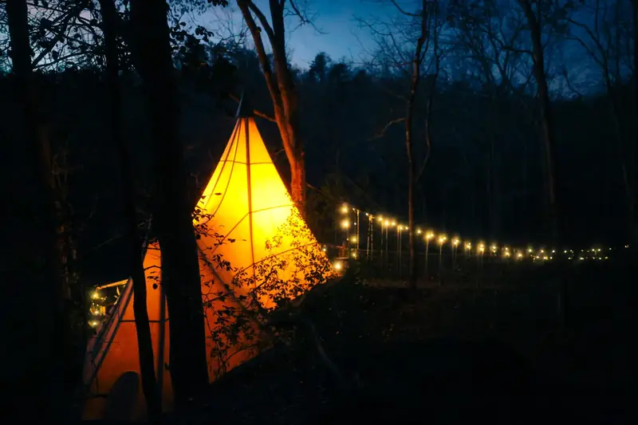

Christmas and New Year's
A Christmas or New Year's elopement
Frost on the rope bridge, the bare canopy's long views, and the fire: an elopement between Christmas and New Year's in the North Georgia mountains.

December
Frost on the rope bridge
Some mornings there's frost on the rope bridge. The canopy is stripped to its bones, and it shows views you can't see the rest of the year. The fire pit feels essential. Down in town, Old Fashioned Christmas turns Dahlonega into the Christmas Town of the Southeast.
Back up the trail the silence is deeper and the stars are brighter. The treehouse is heated, and nights run to about 32 degrees in December at the nearest station with records, in Helen. Sunset comes early, around 5:27 pm in mid December, and the bridge lights come on to meet you.

Fire as witness
The Fire Circle
The Fire Circle is a boulder fire pit that looks like it emerged from the earth centuries ago, set at the four compass points. It echoes traditions that have existed for thousands of years. We light the fire and tend it ourselves.
Exchange rings beside it, or say your vows out on the bridge, where it becomes the aisle.
Flower petals, bubbles, and battery candles are very welcome.
“The treehouse is very comfortable and was decorated perfectly for Christmas.”
After dark
The sky you are inside
When the leaves drop and the canopy opens, November through early spring, the night sky from your deck is staggering. No light pollution. The Milky Way isn't something you look up at. It's something you're inside.
The fire table on the deck keeps you out there longer.

The way in
That bridge is the front door
The road turns to dirt and carves through the forest until it runs out. You park, and from there you walk, under a canopy that closes over the trail behind you.
Around the last curve the laurel opens up, and there it is: a hundred feet of suspended bridge strung with small warm lights, swaying over the holler, with a creek running somewhere below. A thirty-foot bridge before it is the warm-up. At the far end, at the top of the last stair, the door handle is oak, burnished by the hands of every guest who came before you.
That bridge is the front door.
Good to know
The facts, with their sources
On December 15 the sun sets at Dahlonega at 5:27 pm, by the US Naval Observatory's reckoning for the town's point.
US Naval Observatory, read October 29, 2026
At Helen, the nearest station with temperature records, December nights average a low of 31.6 degrees (NOAA's 1991 to 2020 normals). Dahlonega has no such station.
NOAA National Centers for Environmental Information, read October 29, 2026
Questions
Everything you're wondering
Is the treehouse warm enough in December?
It's heated for the cold seasons. It's a canvas treehouse, though, so bring layers, because mountain weather changes.
What if it rains?
Rain in the mountains is its own kind of magic. The treehouse is heated.
When does it get dark?
Sunset is around 5:27 pm in mid December. The bridge and deck lights are solar; they come on at dark and burn two or three hours. The trail lanterns are up for the walk in.
Which packages are there?
The elopements page names them. Every Loxley elopement is personally coordinated.
Inquire
Your marriage deserves a beginning this dramatic
Tell us the day you have in mind. A date, or just a month. How many of you. What it's for, in your own words. We answer fast.
Prefer to talk? Call us at 706-502-4823 or email stay@loxleyforest.com
Read on